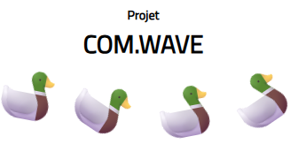
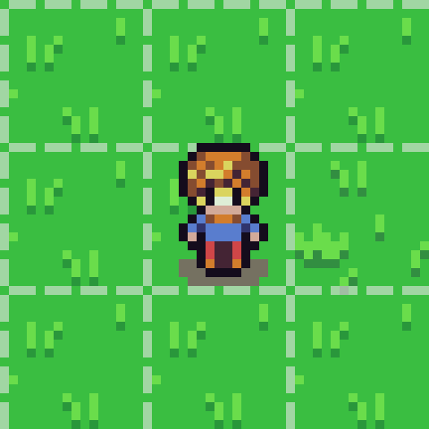
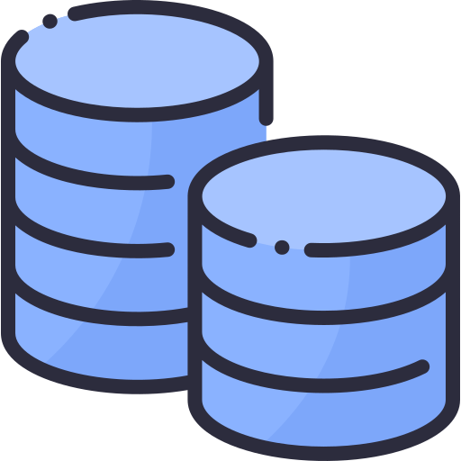
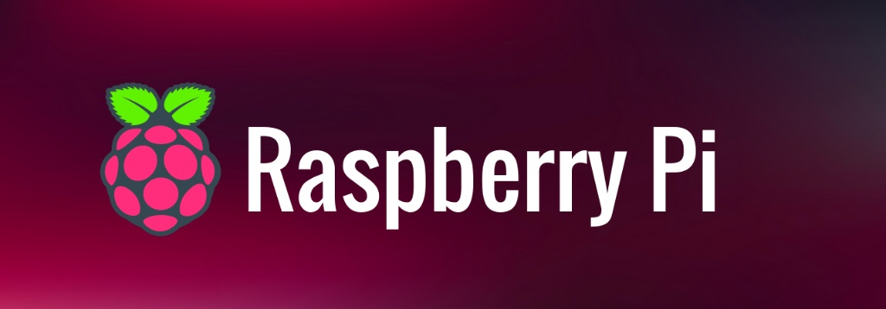

Andrei Pop
Étudiant en BUT Informatique • IUT d'Orsay
Actuellement en première année de BUT Informatique à l'IUT d'Orsay (Université Paris-Saclay), je prépare mon orientation vers le Parcours A : Réalisation d'applications.
Sérieux et passionné par la logique algorithmique, je cherche une alternance de deux ans (rythme : 2 jours en entreprise / 3 jours à l'IUT) pour mettre mes compétences au service d'une équipe technique.
🎓 Parcours & Objectifs
BUT Informatique (Deuxième et troisième année)
IUT d'Orsay, Université Paris-Saclay — Parcours A : Réalisation d'applications (Visée en alternance).
BUT Informatique (Première année)
IUT d'Orsay — Apprentissage approfondi de l'algorithmique, programmation orientée objet, systèmes et réseaux.
Baccalauréat Général
Lycée Jacques Prévert (Longjumeau) — Spécialités Mathématiques et NSI. Mention Bien.
🎯 Ambitions professionnelles & Poursuite d'études
Mon objectif à court terme est de valider mon BUT en apprentissage. À moyen et long terme, j'envisage de poursuivre en école d'ingénieurs ou Master afin d'évoluer vers les métiers d'ingénieur d'études, développeur logiciel ou architecte applicatif.
🌐 Compétences Linguistiques
Évaluation basée sur le Cadre européen commun de référence pour les langues (CECRL) :
Roumain
Langue maternelle — Niveau C2
Anglais
Usage technique & pro — Niveau B2
Espagnol
Niveau scolaire — Niveau A2/B1
🛠️ Stack Technique
Langages de programmation
C++, Python, Java, HTML5, CSS3, SQL
Systèmes & Bases de données
Linux (CLI), Windows, SQLite, Oracle SQL Developer
Outils & IDE
Git, CodeBlocks, PyCharm, Eclipse, Penpot
💻 Projets Académiques
Situation : Projet de synthèse en équipe de création d'une start-up d'agence de voyage innovante à l'IUT d'Orsay.
Tâche : Concevoir l'identité visuelle de la marque et développer un site Web vitrine adaptatif complet, fluide sur mobile et desktop, conforme aux validations W3C.
Action : Maquettage, structuration sémantique des pages, écriture du code CSS (intégration de Flexbox/Grid et media queries pour le responsive) et déploiement sur les serveurs de l'IUT.
Résultat : Un site web vitrine moderne et fonctionnel, hébergé sur le domaine universitaire.

Situation : Projet académique de fin de semestre visant à concevoir une application graphique interactive robuste.
Tâche : Modéliser et programmer un jeu en 2D intégrant des mécaniques d'animation, de collision et une IA ennemie.
Action : Implémentation des principes de la POO, développement algorithmique des calculs de collisions en temps réel et animation de feuilles de sprites.
Résultat : Un jeu fluide et multiniveau entièrement fonctionnel.

Situation : Simulation d'un besoin de structuration de données logistiques et clients pour une entreprise en activité.
Tâche : Concevoir de A à Z le schéma relationnel et optimiser l'accès aux informations stockées.
Action : Création du modèle conceptuel, écriture des scripts de création de tables, injection de jeux d'essais complets et élaboration de requêtes complexes (jointures, agrégations).
Résultat : Une base relationnelle saine, performante et exempte de redondances.

Situation : Nécessité de déployer et de sécuriser un poste de développement distant sur une architecture de type système embarqué.
Tâche : Configurer un système d'exploitation Linux propre, gérer les utilisateurs et verrouiller le réseau.
Action : Administration via CLI, gestion granulaire des droits des utilisateurs/groupes, génération et déploiement de clés SSH, et automatisation du protocole horaire NTP.
Résultat : Un environnement de développement distant stable, sécurisé et prêt pour la production.

🎨 Centres d'Intérêt
Jeux vidéo & Stratégie
Analyse de patterns complexes (Quête de chasse des trophées de Platine sur les jeux conçus par FromSoftware), coopération en équipe sur des jeux compétitifs et gestion de serveurs multijoueurs (Minecraft).
Sports & Discipline
Esprit d'équipe et endurance développés par 2 ans de football en club et 3 ans de natation régulière.
Lecture & Univers
Étude des structures narratives et des univers complexes à travers les mangas de types Shonen et Seinen.